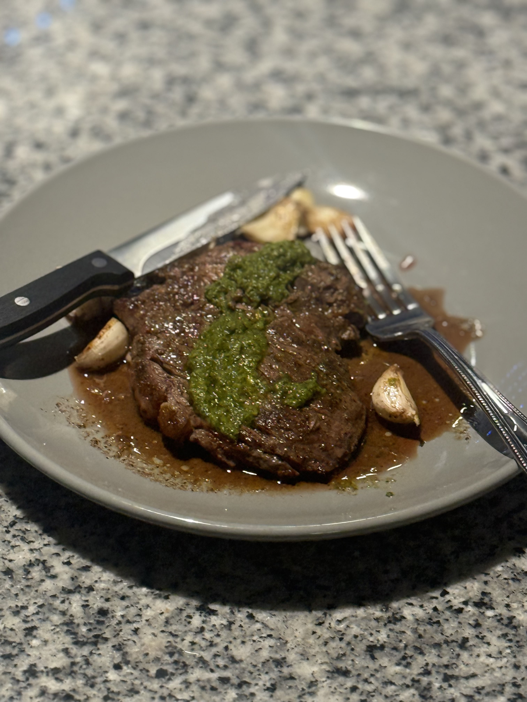

Top Sirloin

Description
Delicious high protein top sirloin steak. Eat daily for massive gains.
Ingredients
- 4oz top sirloin steak
- Salt and Pepper
- Olive oil
- 2 Tbsp of unsalted butter
- 6 garlic cloves
Steps
- Season top sirloin generously with salt and peper
- Heat fying pan on medium-high heat
- Pour olive oil on frying pan, wait till it moves freely and you see a shimmer.
- Place one side of the season top-sirloin in the pan. Let sear for 1 minute
- Flip top sirloin over to sear the other side for 1 minute
- Take sirloin out momentarily, add butter and garlic cloves to the pan
- Put steak back in the pan for 3-4mins, basting it periodically
- Add store bought or home-made chimchurry sauce.
- Enjoy!
Home